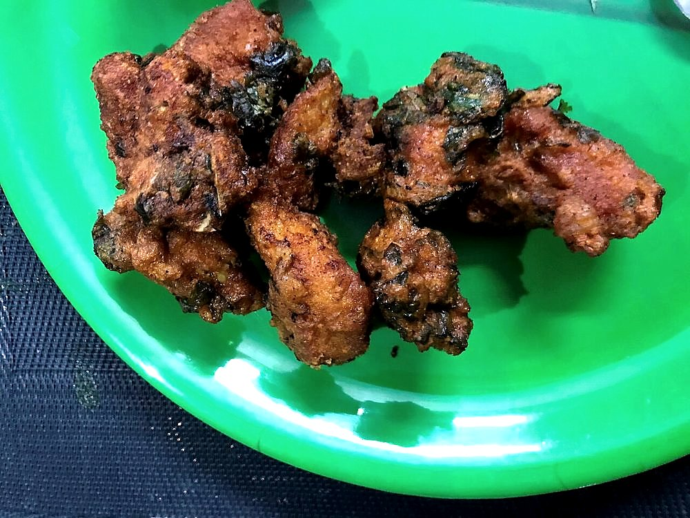

Contains: mustard
Checked against the ingredient list for ten allergens: milk, egg, fish, crustaceans, tree nuts, peanuts, sesame, mustard, soy and gluten. Brands vary, so read the label on anything new to you.
Ingredients
Quantities for 4.
- 500g, scrubbed, peeled and cut into 5mm rounds Lotus Stemnadru; pick firm stems with closed ends
- 150g Besan
- 50g Rice Flourthis is what makes the crust crackle
- 2 tsp Kashmiri Chilli
- 1 tsp Dry Ginger Powder
- 1 tsp Fennel Powderoptional
- 1/4 tsp Asafoetidause compounded-free hing to keep this gluten-free
- 1/4 tsp Baking Sodakeeps the crust lightoptional
- 700ml, for deep frying Mustard Oil
- 1 tsp, plus more for the boiling water Salt
- about 200ml, for the batter Water
Cookware
stovetop, kadhai
Before you start
- Scrub the lotus stem hard under running water and split one to check inside. The hollow channels trap grit that no amount of surface washing removes.
- Cut the rounds no thicker than 5mm. Thicker slices stay woody however long you fry them.
- Mix the batter and let it stand 15 minutes so the gram flour hydrates and stops tasting raw.
Method
- Boil the lotus stem rounds in salted water for 8 minutes, until a knife tip goes in with slight resistance, then drain and spread out to dry completely.They must be dry before battering or the coating slides off in the oil.
- Whisk the besan, rice flour, Kashmiri chilli, dry ginger powder, fennel powder, asafoetida, baking soda and salt together.
- Add the water a little at a time, whisking to a thick batter that coats the back of a spoon and drips slowly.Too thin and it runs off; too thick and you get a doughy jacket. Aim for double cream.
- Heat the mustard oil in a kadhai until it smokes, then lower the heat and bring it back to about 180C. A drop of batter should rise and sizzle within 3 seconds.
- Dip the rounds one by one into the batter, let the excess run off, and lower them into the oil in batches of six or seven.Crowding the pan drops the oil temperature and gives you soggy fritters.
- Fry for 4 to 5 minutes, turning once, until the coating is set, deep gold and audibly crisp when tapped.
- Lift onto a rack, not paper, so the undersides stay crisp, and salt them lightly while hot.
- Repeat with the remaining rounds, letting the oil come back up to temperature between batches.Wait for the shimmer to return before the next batch, about a minute.
- Serve immediately, with a bowl of mujh chetin alongside.
Storage
Best within the hour. Leftovers keep a day in an airtight box and crisp up again in a 200C oven for 6 minutes; they go leathery in the microwave.
Nutrition Low estimate
Medium protein: 13 g a serving, 10% of the calories
| Per serving204 g | Per 100 g | |
|---|---|---|
| Calories | 507 kcal | 249 kcal |
| Protein | 12.8 g | 6 g |
| Carbohydrate | 54.9 g | 27 g |
| of which sugars | 4.2 g | 2 g |
| Fibre | 11.5 g | 6 g |
| Fat | 27.3 g | 13 g |
| of which saturated | 3.2 g | 2 g |
| of which unsaturated | 21.5 g | 11 g |
Syrup left in the bowl, or batter that yields more than the stated servings, means the real figures are likely lower. Nearest database match used for asafoetida. Estimated from raw ingredients using USDA FoodData Central.
Times, yields, allergens and nutrition are guidance. Use your own judgement on doneness and on storing. More in About.